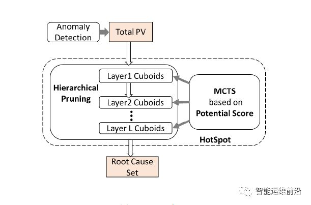
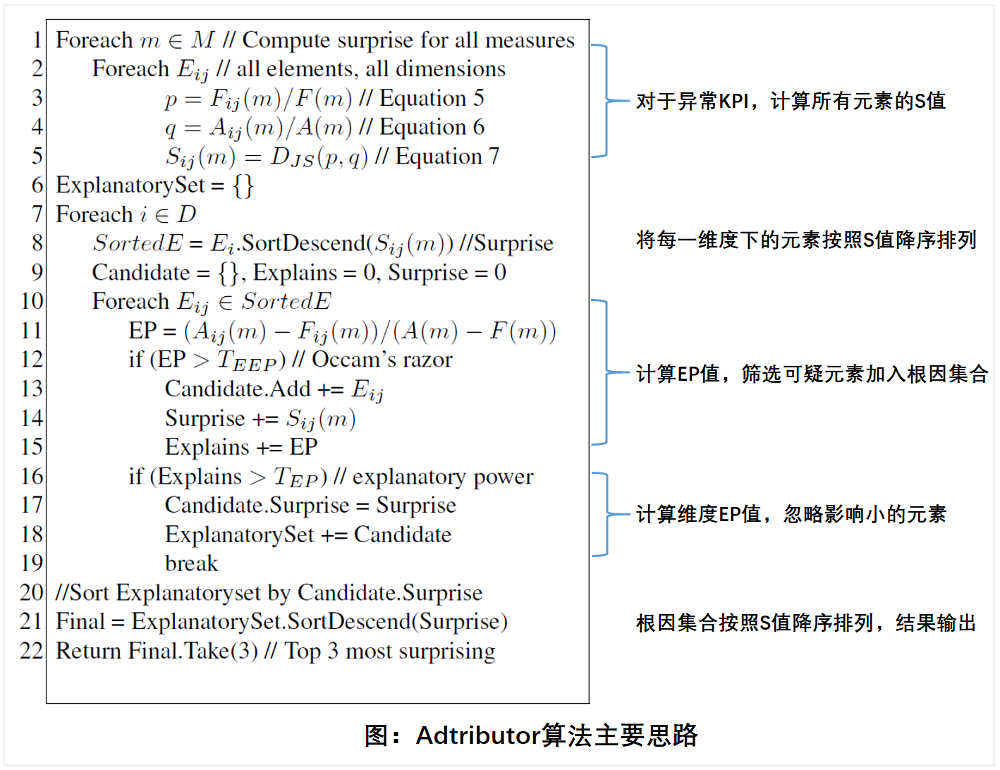
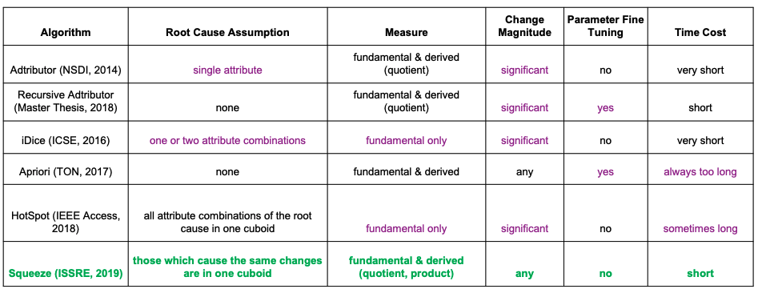
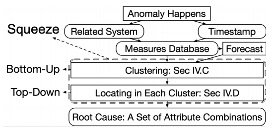
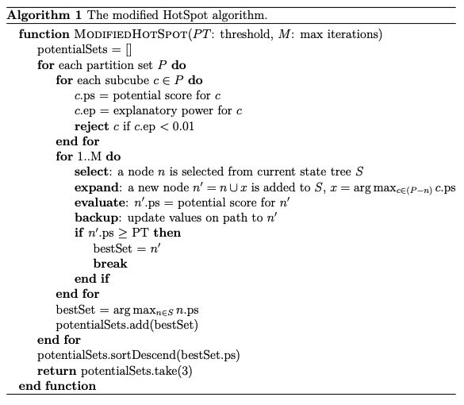
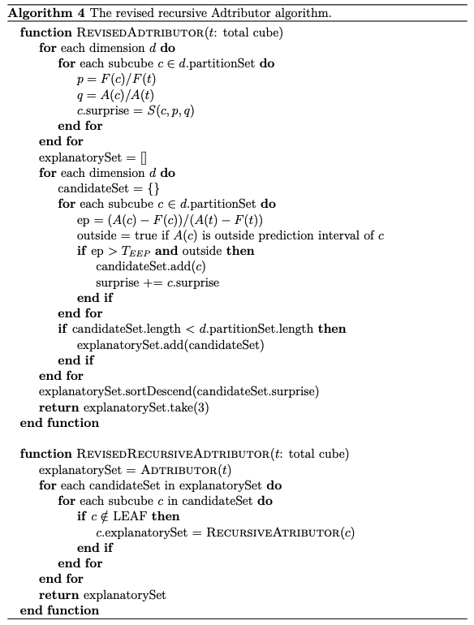

在清华裴丹教授的带领下，近几年清华Netman实验室在AIOps领域的根因定位和分析方向上成果斐然，已经达到了世界顶尖的水平。
自2018年（被称为AIOps元年）以来，运维领域和AI领域愈发密切地结合在一起，智能运维几乎成为一个必然的发展趋势。
从人工运维，到自动化运维，再到智能运维，这是企业业务发展之后运维复杂度和体量上升所决定的自然的发展路线。
清华AIOps：蒙特卡洛树搜索定位多维指标异常HotSpot算法
设计目标
尽可能准确地找到最大可能的根因集合。
思路
多维度指标体系中的异常定位问题，实际上是寻找导致总量突变的根因元素集合。归结为一个搜索问题，即如果任意给定一个元素集合都可以判定其有多大可能是根因，则只需遍历搜索可能的集合并计算是根因的可能性，最后挑选出可能性最大集合。
两个挑战
主要挑战是搜索空间太大，遍历搜索不可能做到；另一个挑战是准确衡量一个元素或集合是根因的可能性非常困难。
两个策略
为了克服两个困难，采用两个策略。
- 应用MCTS算法，对于每个cuboid中的元素进行遍历；
- 采用分层剪枝的策略，逐层搜索，利用前一层结果对该层剪枝。
HotSpot算法设计
HotSpot提出了判断一个集合是根因可能性的分数Potential Score。将问题转化为在一个巨大空间的搜索问题后，应用MCTS作为基础搜索算法，并且提出了一个根因可能性评分指标，作为每个集合的度量和MCTS中的价值函数；此外，HotSpot还采用分层剪枝的方法以进一步降低搜索复杂度。

主要环节
- Ripple effect：元素之间互相影响的规则。
- Potential score：用最细粒度所有元素来表征任何一个元素或集合的变化。
- MCTS：启发式算法，找到满足阈值的结果即可停止搜索。
- 分层剪枝：HotSpot逐层搜索cuboid，对于前一层中ps过小的元素，将其在本层的子元素剪枝去掉。
实验验证
和Adtributor（NSDI 2014）和iDice（ICSE 2016）两种算法对比。HotSpot在所有20类异常实例中都获得了更高的F-score值；随着根因集合中元素数量的增加，iDice的F-score急剧下降；而Adtributor只有第一层异常定位达到了较好的准确性，其余层次中准确性降为0。
MSRA微软亚洲研究院AIOps多维指标突变定位：iDice
设计目标
快速找出导致issue report数量突变的effective combination。
两个挑战
传统查找effective combination的方法是运维工程师利用数据透视表（pivot table）人工进行逐级查找定位。主要有效率低下和有效性差的问题。
三个需求
一个effective combination应有影响力、足够的变化量和更少的冗余。
算法设计
iDice主要由4个需要依次执行的模块构成，分别是impact based pruning、change detection based pruning、isolation power based pruning和result ranking，四个模块都有剪枝功能。其中 isolation power based pruning 是本文的主要贡献和创新点。
主要流程
- Impact based pruning：为了有效减少搜索空间，根据combinations的影响力进行剪枝。
- Change detection based pruning：应用异常检测算法来衡量combination是否显著变化，不显著变化的剪枝删除。
- Isolation power based pruning：将具有变化的combinations与没有变化的其他combinations隔离开来，消除可能存在的冗余。
- Result ranking：根据combinations的相对重要性对它们进行排序，进一步剪枝。
实验验证
与DPMiner算法进行了实验对比，针对两组数据集进行了实验。
多维智能下钻分析：Adtributor算法研究
设计目标
对检测出的异常指标进行异常定位和根因分析。
三个难点
- 对于每一个维度，元素集合能够尽可能地解释KPI异常波动；
- 对于每一个维度，元素集合符合奥卡姆剃刀原则；
- 在所有维度中，找出最令人意外的维度和元素。
算法设计
算法主要思路如图。

核心思想是将多维根因分析问题分解为多个单维根因分析问题，采用EP值和S值定位出每个维度下的异常元素集合，最后根据每个维度总的S值大小汇总输出根因集合。
结果评估
收集某国际企业广告系统的数据，针对12个指标进行异常检测和根因分析。准确性可达95.3%，与具有丰富运维经验的领域专家水平接近，远高于Strawman算法的20%。运行速度上，对于相同异常指标，人工排查根因平均用时在73分钟，Adtributor算法根因分析平均为3分钟左右。
算法改进
未来在不稳定维度和可视化加强两个方向进行改进。
Squeeze：清华Netman Lab对HotSpot算法的改进
设计目标
- 没有不实际的猜想；
- 同时处理基础维度和人工提取维度；
- 处理任何变化幅度的异常；
- 不需要人工调参；
- 在所有情况中都保持高性能。
和HotSpot的异同
基本思想还是立足于ripple effect和potential score，但是都做了改进。在搜索potential score最大的维度组合的方法上是完全不同的。
根因分析算法对比

算法设计
Squeeze算法推断那些导致一样变化的元素在同一个cuboid中。设计思想是改良的ripple effect和改良的potential score。不仅有top to bottom的搜索也有bottom to top的搜索，直到找到中间的根因。
总体架构

原文：Generic and Robust Localization of Multi-Dimensional Root Causes
Apriori关联规则挖掘算法
设计目标
检测定位端到端服务性能下降的根因。
设计亮点
用关联规则挖掘来定位性能下降的根因。
挑战和解决思路
- 模型准确性和模型复杂度的平衡和解决数据稀疏的问题；为此，建立了基准线模型去识别有明显不同表现的数据。
- 要定位端到端性能下降问题；为此，使用了关联规则挖掘来总结出一些规则。
- 要量化方法的有效性；为此，给端到端性能下降例子做了人工检测，并且加入了一些人造的性能下降的例子。
实验结果
全部64例人造异常数据在90%置信度时都被成功检测定位到了；结果显示在80%例子中，异常的根源都不是出于移动网络的问题；检测了2个真实世界异常数据，一个根因定位包含3维度，一个包含4维度，模型总共4维度。
原文：Detecting and Localizing End-to-End Performance Degradation for Cellular Data Services
异常检测和错误定位：对Adtributor和HotSpot的简单改进
设计目标
建立一个找出时序异常并逼近可能根因集合的自动化流程。
算法设计
针对Adtributor和HotSpot的现有限制，分别进行改进以改进表现。Revised HotSpot：原始HosSpot算法只选择最高可能性的那一个集合作为根因展示，因为原作者认为在现实中不同分区的集合同时出现根因是非常稀少的，但是在实际测试集中显示了这种情况确实存在，这可能是由于不同领域的数据的不同属性导致的。为了克服这个问题，本文展示了top3的可能性集合，同时改动了部分公式。
Recursive Adtributor：原始Adtributor算法独立地观察每个维度，递归Adtributor算法则能够为多维度的不同集合使用，递归地在不同候选集合的subcubes上应用此算法。每次应用此算法，新的候选集合就被保存作为新subcube的属性，最后形成一个树结构。Revised Recursive Adtributor：对一些阈值的改动，使得原有算法的一些丢失相关集合的风险降低。将HostSpot的核心思想ripple effect应用到了revised adtributor算法上。

实验结果
在准确率和召回率分数上普遍高于或等于Recursive Adtributor算法和HotSpot算法。